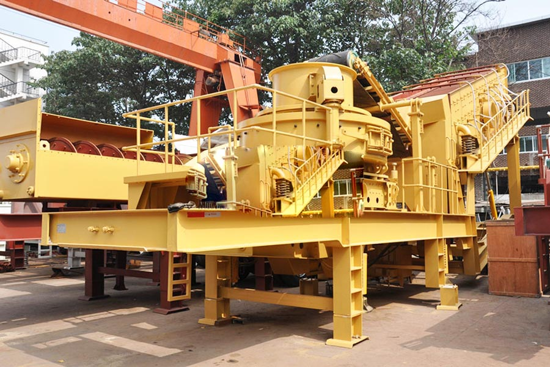

Construction waste crushing production line

Mobile construction waste crushing station for urban construction waste crushing.
vsi sand making machine
Mobile crusher, vertical impact wheeled mobile crushing station, tire vertical impact mobile crusher, PP series mobile crusher, vertical impact of the full name of wheeled mobile crushing station, also known as mobile tire vertical impact crusher with mountains of high performance impact crusher (sand making machine) and vehicle-mounted feeder and high strength shaker.
Libya Sand quarry introduce large-scale movement to achieve energy saving and environmental protection, CAG Libya quarry designed large mobile sand into use, and achieved good results. Sand is the most advanced mobile stone sand making machine.

mobile vsi sand making machine
Feed size : <59mm
Capacity : 60-520t/h
Material : ore,quartz, granite,limestone,slags, construction materials, marble, etc
Application : mobile cone crusher are widely used in mine, metallurgy, construction, road building, railway, water conservancy and chemical industry.
New mobile sand car, moving sand trucks, Germany Sand, Sand German original host of new mobile crushing sand car, greatly expanded the concept of sand operational area. The mobile station sand is the customer's position, the elimination of crushing site, environment, basic configuration burdensome to customers broken.
Features
High capacity, suitable for fine crushing, shape adjusting easily, high performance, flexible, integral crushing & screening and belt conveyor self-loaded.
1. High output and wide utilization ratio: compared with traditional machinery under same power, its production capacity increases 30% and structure is stability.
2. Low consumption of easy-wear parts.
3. Excellent shaped final products.
4. Lubrication system ensures reliable operation.
5. Over-vibration device is equipped to protect the machine when vibration surpasses a stipulated figure.
6. The adjustable feed hopper guarantees the best quantity of material.
7. Environment friendly.
Principle
Mobile Vertical Shaft Impact crusher plant (Portable VSI Crusher, portable sand making machine) is widely used in road and bridge construction, city construction, metallurgy, energy and other departments to implement crushing and screening.
How much money Libya VSI crusher a mobile station, mobile vertical impact crusher manufacturer, CAG specializing in the production (supply) mobile VSI crusher sales Zhengzhou how much of a | moving vertical impact crusher manufacturer products, the company It has a good reputation in the market, professional sales and technical service team.
Mobile crusher, mobile crusher station, mobile crusher, mobile crusher station products in strict accordance with the IS09001 international quality certification system standard production, its main components and wearing parts are made of high quality wear-resistant materials and advanced processing processes.
Leave Me A Message, Now
If you have any questions regarding equipment prices, production line configuration or other problems, you can send a message to us, we will contact you soon.